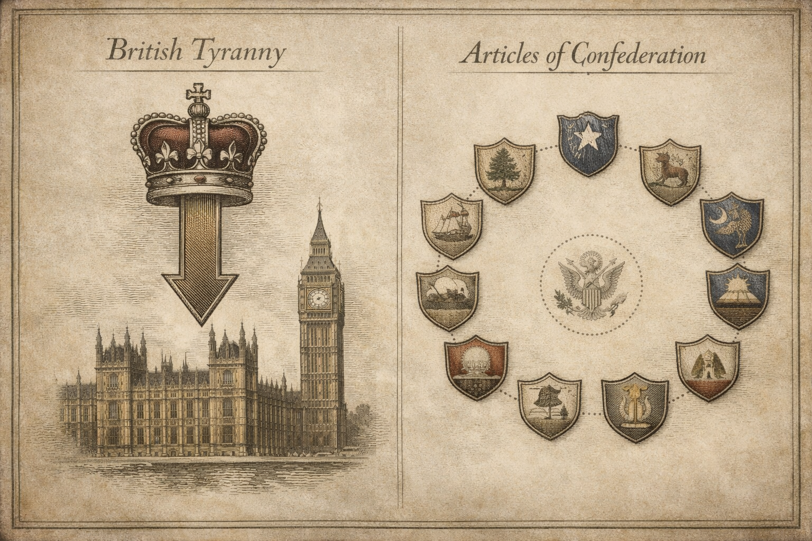
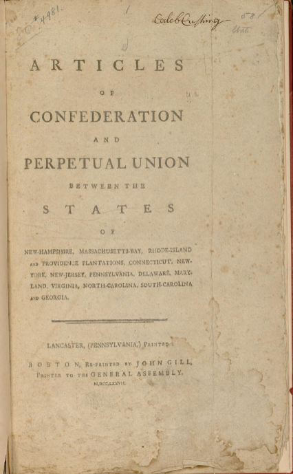
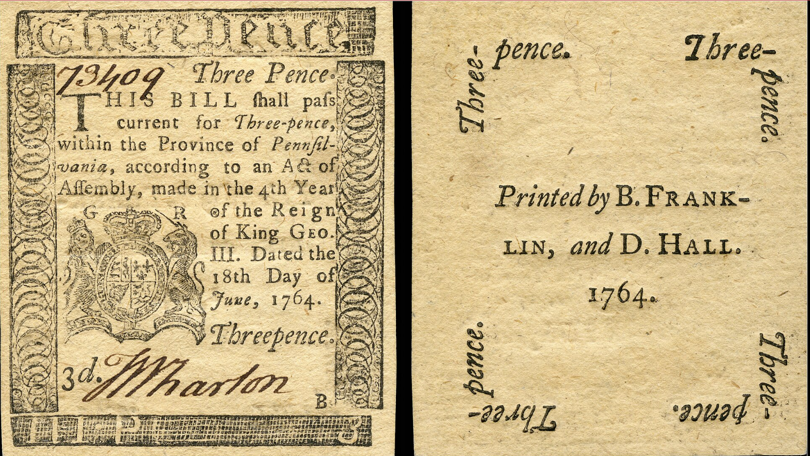
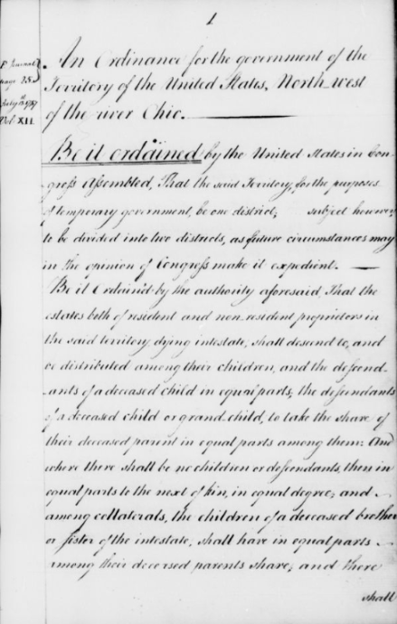
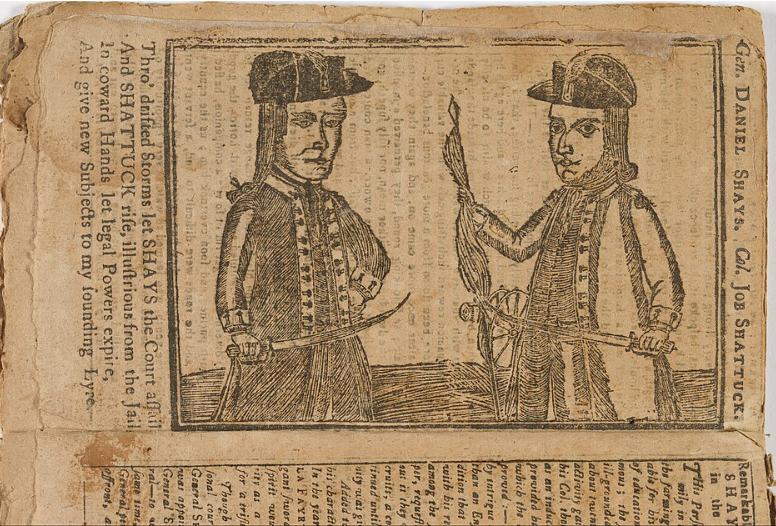
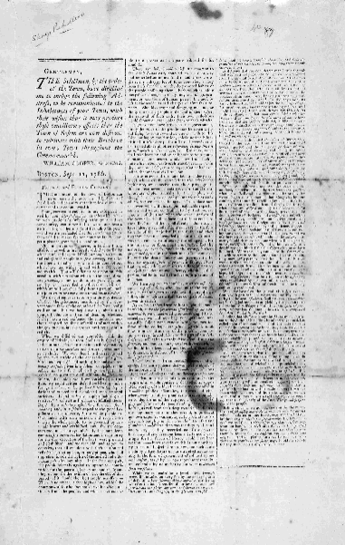
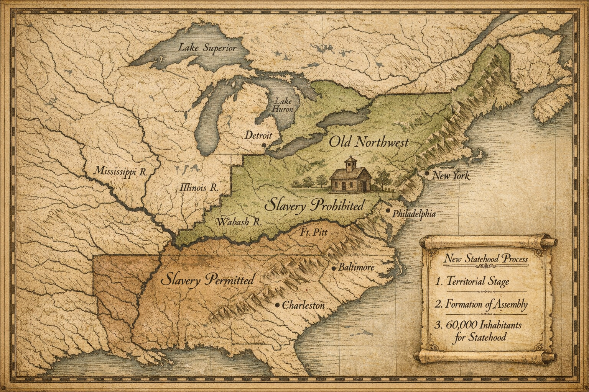

Core Objectives
- Assess the structural weaknesses of the Articles of Confederation, specifically the lack of executive and judicial authority.
- Explain why the Founding Fathers intentionally designed a weak central government based on their experience with British tyranny.
- Analyze the economic and diplomatic paralysis caused by the government's inability to tax or regulate commerce.
- Evaluate the significance of the Northwest Ordinance as the sole major legislative success of the Confederation.
- Trace the events of Shays’ Rebellion and explain how it convinced the American elite that the Articles had to be replaced.
Key Terms
Articles of Confederation | Sovereignty | Unicameral Legislature | Republicanism | Land Ordinance of 1785 | Northwest Ordinance | Shays’ Rebellion | Daniel Shays | Mobocracy | Annapolis Convention | Constitutional Convention
Introduction | The Fragile Bonds of Liberty
After securing a hard-won victory over the British Empire, the fledgling United States faced an even more daunting challenge: governing itself without becoming the very thing it had just overthrown. Fearful of centralized power and the ghost of King George III, the revolutionary generation crafted a "firm league of friendship" that prioritized state independence above all else. This period, known as the Critical Period, tested whether a collection of thirteen sovereign states could survive economic paralysis and internal rebellion. As the country teetered on the edge of collapse, it became clear that the spirit of '76—defined by a fear of tyranny—would have to evolve into a new framework capable of preventing total anarchy.

The transition from a centralized British monarchy to the Articles of Confederation represented a radical shift in political philosophy, moving from a system of concentrated imperial power to one of decentralized state sovereignty where the national government lacked the authority to enforce its will.
Analysis Question: How does the decentralized arrangement of the states under the Articles reflect the Founding Fathers' specific fears regarding the executive branch?
Architecture of a Weak Union
In the wake of independence, the Second Continental Congress sought to balance the necessity of a national government with an intense distrust of centralized authority. The resulting Articles of Confederation were intentionally designed to be toothless, creating a system where the states held the ultimate power and the central government lacked even the basic tools to enforce its own laws. This section explores the structural philosophy behind this first constitution and the specific limitations that ensured the new republic would remain a loose collection of entities rather than a unified nation.
The Fear of Power

How does the intentional weakness of the central government designed in the Articles of Confederation reflect the revolutionary generation's recent experiences with the British monarchy?
When the Second Continental Congress declared independence in 1776, it faced a contradictory task: it had to tear down a government and build one at the same time. The result was the Articles of Confederation, the first written constitution of the United States. Ratified in 1781, the Articles were not designed to create a powerful nation-state in the modern sense. Instead, they were a reaction against the perceived tyranny of King George III and Parliament.
The revolutionaries believed that power was dangerous. They had just fought a war to escape a strong, centralized executive (the King) and a distant, omnipotent legislature (Parliament) that taxed them without consent. Therefore, when they designed their own government, they swung the pendulum to the opposite extreme. They created a government that was intentionally weak.
Under the Articles, the United States was not a single nation, but a "firm league of friendship" among thirteen independent states. The text explicitly stated: "Each state retains its sovereignty, freedom, and independence." The central government was essentially a diplomatic council where ambassadors from the states met to coordinate defense, but it had no authority to compel the states to do anything.
The structure reflected this fear of centralized power. There was no President (executive branch) to enforce laws, lest he become a new Caesar. There was no Supreme Court (judicial branch) to settle disputes, lest it overrule local courts. There was only a unicameral legislature (one-house Congress). In this Congress, equality was the rule: every state, regardless of size, had exactly one vote. Rhode Island, with a tiny population, had the same political power as Virginia, the largest and wealthiest state. Furthermore, passing any significant law required a "supermajority" of 9 out of 13 states, and amending the Articles required unanimous consent—a nearly impossible hurdle that doomed the system to rigidity.
Checkpoint
1 of 2
1. Why did the Founding Fathers intentionally design a weak central government under the Articles of Confederation?
The Paralysis of Government
Once the euphoria of victory over Britain faded in 1783, the structural flaws of the Articles became painfully apparent. The new nation entered a period historians call the "Critical Period," where it seemed the Union might dissolve entirely. The central failure was economic.

What were the economic and diplomatic consequences of a national government lacking the constitutional authority to collect taxes or regulate interstate commerce?
The most crippling weakness was that the Confederation Congress had no power to tax. It could only "requisition" funds—essentially asking the states for donations. Unsurprisingly, the states rarely paid in full. During the 1780s, the government received only about one-sixth of the money it requested.
Without revenue, the United States was a deadbeat nation. It could not pay the interest on the massive debts incurred during the Revolutionary War. It could not pay the soldiers who had fought for independence, leading to mutinies and unrest. Robert Morris, the superintendent of finance, proposed a modest 5% tariff on imports to fund the government, but Rhode Island vetoed it. Because amendments required unanimity, the measure died, and the government remained bankrupt.
The Articles also lacked the power to regulate interstate commerce. This led to economic warfare between the states. New York, acting like an independent country, placed tariffs on firewood imported from Connecticut and cabbages from New Jersey. New Jersey retaliated by taxing the lighthouse on Sandy Hook, which guided ships into New York Harbor.
Internationally, the situation was humiliating. Britain refused to vacate its forts in the Northwest Territory (modern-day Ohio and Michigan), violating the Treaty of Paris. The British argued that since the U.S. had not paid its pre-war debts to British merchants, Britain did not have to leave. Spain, sensing American weakness, closed the Mississippi River to American trade in 1784, threatening to strangle the economy of the western settlers. The Confederation Congress was powerless to retaliate. It could not draft an army to force the British out, nor could it impose trade sanctions on Spain, because each state set its own trade policies.
Checkpoint
1 of 2
1. What was the primary reason the Confederation government remained bankrupt during the 1780s?
Growth and Grassroots Rebellion
While the Confederation struggled with bankruptcy and diplomatic humiliation, it managed to establish a lasting legacy through the orderly expansion of the American West. By transforming the "national domain" into organized townships and banning slavery in the Old Northwest, the government provided a blueprint for future growth. However, this legislative success was soon overshadowed by domestic turmoil. In the subsequent sections, the focus shifts to how the government's inability to maintain order during Shays’ Rebellion served as the ultimate proof that the Articles of Confederation were a failed experiment.
The Success in the West

Why was the peaceful transfer of western land claims to the national government critical for the long-term survival and expansion of the United States?
Despite its failures, the Confederation Congress achieved one monumental success: the organization of the western lands. The states had engaged in bitter disputes over who owned the vast territory between the Appalachians and the Mississippi River. Eventually, the states agreed to cede their land claims to the central government, creating a "national domain."
To manage this land, Congress passed two visionary laws. The Land Ordinance of 1785 established a scientific system for surveying and selling land. It divided the west into square townships of six miles by six miles, which were further divided into 36 sections of 640 acres each. Notably, the income from the sale of the 16th section of each township was reserved to support public schools—the first federal commitment to public education.
Two years later, Congress passed the Northwest Ordinance of 1787. This law created a process for admitting new states to the Union on equal footing with the original thirteen. It rejected the model of colonialism; the West would not be a colony of the East, but an extension of the republic. Most radically, the Northwest Ordinance prohibited slavery in the territory. This established a precedent that the federal government could regulate the spread of slavery, a power that would become the central flashpoint of the 19th century.
Checkpoint
1 of 2
1. What was a major long-term impact of the Land Ordinance of 1785?
Shays’ Rebellion: The Turning Point
By 1786, the combination of debt, lack of currency, and high state taxes created a crisis in rural America. Nowhere was this more acute than in western Massachusetts. Farmers there, many of them veterans of the Revolutionary War, were losing their farms to foreclosure because they could not pay their debts in hard currency (gold or silver), which was scarce.

How did the scarcity of hard currency and aggressive foreclosure policies in western Massachusetts trigger an armed rebellion against the state government?
These farmers felt betrayed. They had fought against British taxes only to be crushed by taxes from Boston. When the state legislature adjourned without providing relief, the farmers took action. Led by Daniel Shays, a former captain in the Continental Army, crowds of armed farmers surrounded courthouses in Northampton and Worcester, refusing to let the judges enter. If the courts could not sit, they reasoned, farms could not be foreclosed.
The protests escalated into an armed uprising known as Shays’ Rebellion. The rebels, wearing hemlock sprigs in their hats as a symbol of liberty, marched on the federal armory at Springfield in January 1787, attempting to seize weapons to overthrow the state government.
Checkpoint
1 of 2
1. What was the primary motivation for the farmers who participated in Shays’ Rebellion?
The Crisis of Authority

What does the reliance on a privately funded mercenary army to suppress Shays' Rebellion reveal about the structural failures of the Articles of Confederation?
To the wealthy elite of the United States, Shays’ Rebellion was the realization of their deepest fears. It looked like "Mobocracy"—rule by the mob. It seemed to prove that the people had too much liberty and not enough virtue. If a captain of the Revolution like Daniel Shays could turn against the government, was the republic doomed to descend into anarchy?
The response of the Confederation government highlighted its impotence. The Secretary of War, Henry Knox, asked Congress to raise troops to suppress the rebellion, but Congress had no money and no authority to draft soldiers. In the end, the rebellion was put down not by the national government, but by a private mercenary army hired by wealthy Boston merchants.
The shock of Shays’ Rebellion reverberated across the states. George Washington, living in retirement at Mount Vernon, was horrified. He wrote to James Madison, asking, "What is to be done?" The rebellion convinced Washington and other nationalists that the Articles of Confederation could not be fixed; they had to be replaced. The "spirit of '76"—the fear of tyranny—was replaced by the "spirit of '87"—the fear of anarchy.
Checkpoint
1 of 2
1. Why was the Confederation Congress unable to suppress Shays’ Rebellion?
The Road to Philadelphia
How did the failure of the Annapolis Convention and the subsequent shock of Shays’ Rebellion create the political mandate necessary to convene the Constitutional Convention?
By the mid-1780s, the "firm league of friendship" was fraying at every seam, yet the path to reform remained blocked by the Articles’ requirement for unanimous consent—a hurdle that had already killed vital attempts to fund the government. The first organized attempt to bypass this paralysis occurred in 1786 at the Annapolis Convention, where figures like Alexander Hamilton and James Madison hoped to address the trade wars erupting between states. Although the meeting was a statistical failure with only five states appearing, it served as a critical staging ground. Hamilton used the gathering to issue a formal plea for a broader meeting in Philadelphia, arguing that the nation’s problems were not merely commercial but structural.
The political inertia that usually stalled such calls vanished instantly when news of the uprising in Massachusetts spread. Following the events of Shays’ Rebellion, the theoretical debates about state sovereignty were eclipsed by a visceral fear that the republic was tilting toward Mobocracy. Driven by the realization that the central government could neither raise an army nor protect private property, twelve states abandoned their reservations and appointed delegates to the Constitutional Convention. Rhode Island alone remained absent, but the momentum for change had become irreversible. As the delegates traveled to Philadelphia in May 1787, they carried a mandate to "revise" the existing system, yet many arrived convinced that a second founding was the only way to save the American experiment from total collapse.
Checkpoint
1 of 2
1. What was the primary significance of the Annapolis Convention?
MAPPING HISTORY | The Geometry of Expansion
The Northwest Ordinances
While the Confederation Congress was paralyzed by debt and rebellion in the East, it managed to pass two laws that permanently altered the physical and political landscape of the American West. These ordinances applied to the "Old Northwest"—the territory that would become Ohio, Indiana, Illinois, Michigan, and Wisconsin.

The Northwest Ordinance of 1787 rejected the colonial model of governance by providing a path for new territories to enter the Union as equal states, while simultaneously creating a significant geographic and cultural divide over the institution of slavery.
Location and Landscape
Before 1785, land ownership in the colonies was often defined by "metes and bounds"—using natural markers like trees, rocks, and winding creeks. This led to irregularly shaped plots and constant boundary disputes. The Northwest Territory was a vast, unmapped wilderness that the cash-strapped Congress needed to sell to pay off War of Independence debts. To make the land marketable, they needed to make it measurable.
Geography and Events
The Land Ordinance of 1785 imposed a mathematical grid upon the American landscape, reflecting the Enlightenment belief in order and reason. Government surveyors divided the land into square townships, each six miles on a side.
- Each township was divided into 36 sections of 1 square mile (640 acres).
- The government sold these sections to settlers and speculators.
- Section 16 in every township was reserved to fund public education, establishing a precedent that public schools were essential to a republic.
Regional Impact
Two years later, the Northwest Ordinance of 1787 established the rules for governance. Unlike the British Empire, which treated colonies as subservient, the United States decided that new territories would enter the Union as equals. Once a territory reached 60,000 free inhabitants, it could draft a constitution and apply for statehood. Crucially, the Ordinance banned slavery in the territory, creating a geographic divide at the Ohio River between slave and free states that would shape American politics until the Civil War.
Broader Implications
This legislation was the Articles of Confederation's greatest legacy. If you fly over the Midwest today, the landscape below looks like a giant checkerboard. The square fields, straight roads, and county lines are the direct physical result of the 1785 grid system. It turned the "wild" frontier into an organized, saleable commodity, fueling the rapid westward expansion of the next century.
Spatial Reasoning Questions
Analyze the Imagery
Observe the description of the "giant checkerboard" visible from the air today; how did the shift from "metes and bounds" to a mathematical grid system fundamentally change how Americans perceived and interacted with the natural environment?
Compare Models
Contrast the American "statehood" model established in 1787 with the traditional British colonial system; in what ways did granting equal status to new territories prevent the type of revolutionary friction the colonies had recently experienced?
Evaluate the Legacy
Given that the Northwest Ordinance banned slavery while the Land Ordinance prioritized public education, how did these two mandates combine to create a distinct regional identity for the Old Northwest compared to the states south of the Ohio River?
Vocabulary Activity
Review the key terms from this chapter. Select the correct term from the word bank to complete the historical summary below.